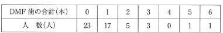
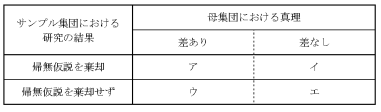

| 用語 | 定義 |
|---|---|
| 平均値 | 全データを足して個数で割った値（算術平均） |
| 中央値 | データを小さい順に並べたとき中央に位置する値 |
| 最頻値 | 最も頻繁に出現する値 |
| 分散 | 各データが平均値からどれだけ散らばっているかを示す値 |
| 標準偏差 | 分散の平方根 |
| 範囲 | 含まれる割合 |
|---|---|
| 平均値 ± 1×標準偏差 | 68% |
| 平均値 ± 2×標準偏差 | 95% |
| 平均値 ± 3×標準偏差 | 99.7% |
注意：±1標準偏差は68%、±2標準偏差は95%を覚える
データ分布が正規分布から外れて歪んでいる場合、平均値・中央値・最頻値の位置関係が変わる。
DMF歯数の分布は右に歪んでいることが多い（0本が最頻値）
| 種類 | 特徴 |
|---|---|
| 選択バイアス | 観察集団が母集団の正しい代表でないときに起こる偏り |
| 情報バイアス | 情報を得るときにその情報が正しくないために起こる偏り |
| リコールバイアス | 症例対照研究で過去の記憶に頼るため生じやすい（思い出しバイアス） |
| 交絡バイアス | 第3の因子（交絡因子）が曝露と疾病発生の両者に関係し、関連を歪める |
| 方法 | 研究デザイン |
|---|---|
| 無作為割り付け | ランダム化比較試験 |
| マッチング | 症例対照研究（年齢・性別などを揃える） |
| 層化 | 分析段階でグループ分けして解析 |
| 多変量解析 | 統計手法で影響を除去 |
| 種類 | 定義 |
|---|---|
| 第1種の過誤（α error） | 差がないのに「差がある」と判定（偽陽性） |
| 第2種の過誤（β error） | 差があるのに「差がない」と判定（偽陰性） |
正規分布で平均値±1標準偏差の範囲に入る確率はどれか。1つ選べ。
【解説】正規分布では平均値±1標準偏差に68%、±2標準偏差に95%が含まれる。
正規分布で正しいのはどれか。2つ選べ。
【解説】正規分布の特徴は左右対称で平均値・中央値・最頻値が一致する。eは±2標準偏差で95%なので誤り。3歳児dft数は0本が多く右に歪んでいるため正規分布ではない。
小学校のクラス（50名）における「一人当たりのDMF歯の合計」の度数分布表を示す。
「DMF歯の合計」の基本統計量の関係で正しいのはどれか。1つ選べ。

【解説】DMF歯数の分布は0本が最も多く右に歪んだ分布である。右に歪んだ分布では平均値＞中央値＞最頻値が通常だが、本問は問題文の選択肢fに「中央値＞最頻値＞平均値」との記載があり、実際の度数分布表から計算すると中央値＞平均値＞最頻値となる特殊なケース。
疫学調査において第3の因子が曝露と疾病発生の両者に関係することにより、曝露因子と疾病発生量との関連が歪められる現象はどれか。1つ選べ。
【解説】交絡とは、調査対象とする因子以外の因子（交絡因子）が曝露と疾病発生の両者に関係し、関連を歪めること。選択バイアスや情報バイアスは交絡とは異なる概念。
研究を行ったサンプルにおいて、2群間の差を統計的に検定した結果と母集団における真理との関係を表に示す。
第1種の過誤はどれか。1つ選べ。

【解説】第1種の過誤（α過誤）は「母集団では差がないのに、サンプルでは差があると判定してしまう」誤り。表の「ア」がこれに該当する。